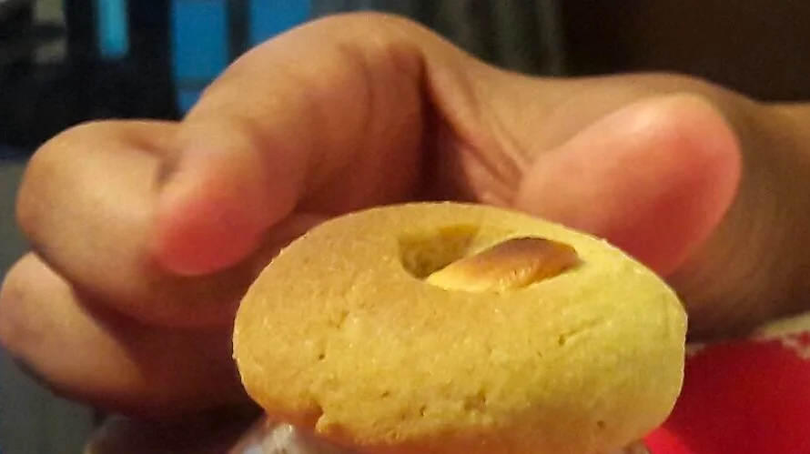

TASTY COOKIES with
'Siri Dhanya' millet
TASTY COOKIES with FOXTAIL MILLET

Ingredients :
- Foxtail Millet Flour,
- Chickpea Flour,
- Suji (Durum wheat coarse flour)
- Ghee
Source: Original Millets Zone · Foxtail millet cookies
Content captured 25 October 2026. Reorganized for reading; purchase-related material excluded.
Content captured 25 October 2026. Reorganized for reading; purchase-related material excluded.